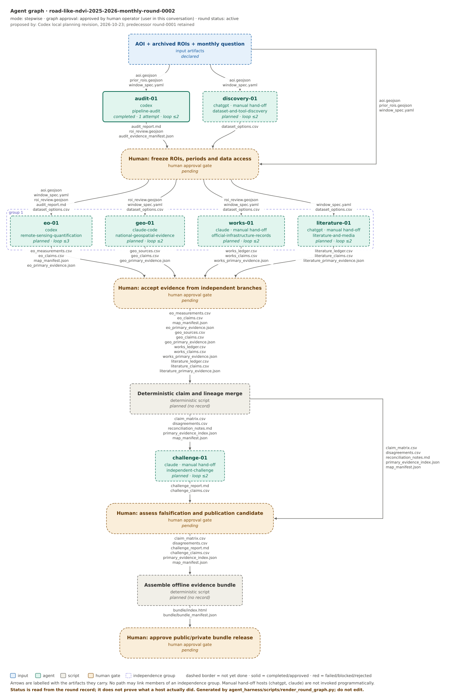

The user approved this graph and audit-01 only. The local-cache audit is completed; human acceptance of its outputs and all later steps/gates remain pending.
Open completed audit and evidence · Audit manuscript · Raw/outline/reproduced-mask comparison · Pending next-step proposal
The planning packet below and private draft are retained as earlier snapshots. Their pending/not-run statements describe that earlier state; current execution truth is in round.yaml and the linked audit.
No role executions; all approvals pending.
Complete hand-off manuscript · Canonical SVG · Canonical Mermaid · Schema 1.1 round · Private offline draft and map

SHA-256: d94ff95e0c4fd75f87341faf01a7d9187cc1c08b13ab66a32fb8cf2bb4ad57d7
# audit-01 — Pipeline/code and prior-evidence audit **Round:** round-0002 (planned). **Host (proposed):** `codex`. **Role:** `roles/pipeline-audit.md` (`round_only`). ## Question Check previous outputs, exact NDVI formulas, imagery dates, calibration, geo-registration and reference ROI coordinates. Keep 2026-10-06 evidence unchanged. ## Inputs and authority Inputs: pinned AOI, original 2026-10-06 review (report.md, rois.geojson, report.html, raster_audit.json), current single-scene and summer configs. Lab and Sentinel scientific/provenance policy has priority over this assignment. Data access is read-only outside new round output directories. No agent promotes knowledge or publishes a public release. ## Bounded step plan 1. Verify previous report/ROI IDs, no silent changes, and exact available source-window hashes. 2. Find both corridor centreline/buffers and controls in prior rois.geojson; verify geometries within AOI and explain which portion represents two road-like features. 3. Trace map legend and code to determine whether existing display is absolute NDVI difference or relative percentage, including denominator and handling near zero. 4. Recreate existing signal only from authenticated local cached scene windows and compare checksums where possible. No new downloads before the data-access freeze gate; missing or mismatched historical inputs are blockers. 5. Inspect spatial registration, SCL nodata, reflectance offset flags, scene counts, resampling and prior WMS acquisition-date conflict. 6. Export roi_review.geojson by copying verified geometries (with original source checksum), preserving controls; mark if a manual ROI approval is needed. ## Output contract Write `audit_report.md, roi_review.geojson` into this round's artifacts directory or a new read-only-referenced run directory. For each claim include `claim_id`, `roi_id`, `period`, `status`, `evidence_ids`, `source_lineage`, `limitations`. Record tools, original observations, acquisition/registration dates, hashes, data/license terms and negative findings. An unavailable input produces a clearly marked blocker, not invented output. ## Acceptance / stop rules PASS if road sampling geometries are explicitly pinned, old run unchanged, all QA limits stated. BLOCK if ROI identity, old source hashes or formula semantics cannot be checked. ## Review Step plan and outputs require human approval at the declared graph gates. `actual_executions` is empty until a host actually performs the task. No unreviewed source is ground truth. ## Successor planning constraints Predecessor: round-0001, retained unchanged. This is a logical role plan, not proof of native delegation. Proposed hosts require availability checks; separate sessions need manual handoff. Null budgets are unspecified and require a bounded approval. Record actual model/runtime, prompt, loaded file SHA-256 values, exact commands, timestamps, source URLs/dates and limitations under schema 1.1 only after approval. No actual attempts are recorded in this bootstrap. Do not reconstruct new centrelines from buffered polygon vertices. The archive contains two corridor polygons and two visual controls; source centreline recovery and overlay QA remain pending. Also write audit_evidence_manifest.json with original source paths, hashes and QA status.
SHA-256: a884061d6f6fc075cde8cca59c21e14c2497a4a38b03c7359e0d37a76b016f16
# discovery-01 — Dataset/tool discovery and verification **Round:** round-0002 (planned). **Host (proposed):** `chatgpt`. **Role:** `agent_harness/roles/dataset-and-tool-discovery.md` (`standing`). ## Question Find viable dated Sentinel scenes, aerial orthophotos, ETAK roads and official road/rail geometry with license/availability. Do not treat source listing as acquired evidence. ## Inputs and authority Inputs: AOI, preliminary ROI IDs, month windows, provider/source preferences, no assumed independent ground truth. Lab and Sentinel scientific/provenance policy has priority over this assignment. Data access is read-only outside new round output directories. No agent promotes knowledge or publishes a public release. ## Bounded step plan 1. Verify Earth Search or STAC Sentinel-2 L2A and radar products for both full Junes, and image access/cost. 2. Verify official Estonian historical orthophoto/WMS layer names, flight dates, GSD, terms; flag previously contradictory 2023/2025 metadata. 3. Verify ETAK historical/current road representations and Transpordiamet Teeregister or official Rail Baltic alignments. 4. Find forest-cover baseline if a forest-specific claim is sought; state forest definition and license as pending until approved. 5. Rank FAIR-inspired criteria, spatial/temporal coverage, quality and lineage. Keep automatic catalogue leads unverified. ## Output contract Write `dataset_options.csv` into this round's artifacts directory or a new read-only-referenced run directory. For each claim include `claim_id`, `roi_id`, `period`, `status`, `evidence_ids`, `source_lineage`, `limitations`. Record tools, original observations, acquisition/registration dates, hashes, data/license terms and negative findings. An unavailable input produces a clearly marked blocker, not invented output. ## Acceptance / stop rules PASS if every selected link has access evidence, dates/scale limitations, producer and lineage. BLOCK if selected datasets cannot be legally accessed or dated. ## Review Step plan and outputs require human approval at the declared graph gates. `actual_executions` is empty until a host actually performs the task. No unreviewed source is ground truth. ## Successor planning constraints Predecessor: round-0001, retained unchanged. This is a logical role plan, not proof of native delegation. Proposed hosts require availability checks; separate sessions need manual handoff. Null budgets are unspecified and require a bounded approval. Record actual model/runtime, prompt, loaded file SHA-256 values, exact commands, timestamps, source URLs/dates and limitations under schema 1.1 only after approval. No actual attempts are recorded in this bootstrap.
SHA-256: ee54173b4674a8929c0911567f2e28c8b102d752cf74202cd6e8e0d18dab40fc
# eo-01 — Monthly sensor quantification **Round:** round-0002 (planned). **Host (proposed):** `codex`. **Role:** `agent_harness/roles/remote-sensing-quantification.md` (`standing`). ## Question Compute true calendar-month S2 NDVI means for 2025/2026 (with median sensitivity), absolute and safely defined relative changes, SAR ancillary evidence and sensitivity with identical support. ## Inputs and authority Inputs: frozen ROI/controls + AOI + monthly config + accepted dataset and QA reports. No interpreted national/official results. Lab and Sentinel scientific/provenance policy has priority over this assignment. Data access is read-only outside new round output directories. No agent promotes knowledge or publishes a public release. ## Bounded step plan 1. Build 2025-06-01 to 2025-07-01 and 2026-06-01 to 2026-07-01 UTC Sentinel-2 L2A inventories. Check scene-specific acquisition times and calibration. 2. Calculate NDVI for each SCL-screened observation before taking the pixelwise arithmetic mean within each month; retain the pixelwise median as a robust sensitivity check. Preserve per-pixel observation counts and temporal support. 3. Enforce preregistered minimum N=3 clear observations per month (or mark unavailable); compare on common valid pixels only. Run N=2,3,5 sensitivity without backfilling missing. 4. Compute d_abs=NDVI26-NDVI25 and d_rel=d_abs/max(abs(NDVI25),eps). Report relative change only where NDVI25>=0.2, with eps=0.1; outside region mark undefined/unreliable. Store Δ and reference NDVI instead of percentage where unsuitable. 5. Check 10 vs 20m grid, reference/target registration, mask dilation, edge buffers 0/20/40/80m, crop/vary threshold, neighboring unchanged roads + forest controls. Do not assume a specific threshold is truth. 6. Separate road core vs road edges vs matched nonroad controls; add NDMI/NBR, Sentinel-1 VV/VH only as corroborative mechanisms with acquisition/orbit dates and caveats. 7. Try July and August matched month and multi-year (where available) as sensitivity, not as substituted June data. 8. Record raster output checksums, reproducible exact commands, hectare results under declared mask and reasons for missing data; generate offline maps per ROI. ## Output contract Write `eo_measurements.csv, eo_claims.csv, map_manifest.json` into this round's artifacts directory or a new read-only-referenced run directory. For each claim include `claim_id`, `roi_id`, `period`, `status`, `evidence_ids`, `source_lineage`, `limitations`. Record tools, original observations, acquisition/registration dates, hashes, data/license terms and negative findings. An unavailable input produces a clearly marked blocker, not invented output. ## Acceptance / stop rules PASS if monthly composites exist, pixel counts/coverage and common support checks pass, and no roads are labeled forest loss without approved forest mask. BLOCK if data sparse, dates unverified, calibration/reg uncertain. ## Review Step plan and outputs require human approval at the declared graph gates. `actual_executions` is empty until a host actually performs the task. No unreviewed source is ground truth. ## Successor planning constraints Predecessor: round-0001, retained unchanged. This is a logical role plan, not proof of native delegation. Proposed hosts require availability checks; separate sessions need manual handoff. Null budgets are unspecified and require a bounded approval. Record actual model/runtime, prompt, loaded file SHA-256 values, exact commands, timestamps, source URLs/dates and limitations under schema 1.1 only after approval. No actual attempts are recorded in this bootstrap. Also produce eo_primary_evidence.json: a machine-readable list of source and derived artifact paths, SHA-256 values, acquisition/publication/retrieval dates, license, lineage and missing-input status. The reconciler must preserve these references for challenge and assembly. Shared providers do not establish independent source lineage. The 10 m native optical grid is a visual/registration sensitivity only; the production area path rejects non-equal-area grids. Use a separate 10 m EPSG:6933 run for hectare sensitivity. No forest baseline is approved: stop forest-specific estimates, retain all-land-cover anomalies only. NDVI relative normalization is an investigation setting, not canonical Lab semantics.
SHA-256: f756bc4925800ff82ff0fb56dde544a89cc8167a24cbcd7ff163c62524128d64
# geo-01 — Historical national geospatial corroboration **Round:** round-0002 (planned). **Host (proposed):** `claude-code`. **Role:** `agent_harness/roles/national-geospatial-evidence.md` (`standing`). ## Question Inspect pinned ROI geometries against dated authoritative orthophotos, ETAK mapping and metadata; do not use EO conclusions to guide interpretation. ## Inputs and authority Inputs: ROI geometries and windows only; avoid reading EO conclusions until independent observations archived. Lab and Sentinel scientific/provenance policy has priority over this assignment. Data access is read-only outside new round output directories. No agent promotes knowledge or publishes a public release. ## Bounded step plan 1. Retrieve official ETAK current/historical road geometries near both ROI traces and controls. 2. Select actual year-specific orthophotos (earlier than 2025 and 2025/2026 if available), verify provider metadata by map sheet, not only WMS layer labels. 3. Distinguish acquisition date, mosaic edition, WMS request time and interpretation date. Record pixel GSD and positional accuracy where published. 4. Classify centreline/track/road/rail presence at each dated source: present, absent with usable coverage, indeterminate, or unavailable. Avoid inferring absence from missing imagery. 5. Export a dated screenshot/georeferenced window where license permits, plus per-source hashes and a source-derived map overlay. ## Output contract Write `geo_sources.csv, geo_claims.csv` into this round's artifacts directory or a new read-only-referenced run directory. For each claim include `claim_id`, `roi_id`, `period`, `status`, `evidence_ids`, `source_lineage`, `limitations`. Record tools, original observations, acquisition/registration dates, hashes, data/license terms and negative findings. An unavailable input produces a clearly marked blocker, not invented output. ## Acceptance / stop rules PASS if year-to-year assertions cite genuinely dated imagery at feature scale. BLOCK if 2025 layer vs 2023 flight-date conflict remains unresolved; still report indeterminate. ## Review Step plan and outputs require human approval at the declared graph gates. `actual_executions` is empty until a host actually performs the task. No unreviewed source is ground truth. ## Successor planning constraints Predecessor: round-0001, retained unchanged. This is a logical role plan, not proof of native delegation. Proposed hosts require availability checks; separate sessions need manual handoff. Null budgets are unspecified and require a bounded approval. Record actual model/runtime, prompt, loaded file SHA-256 values, exact commands, timestamps, source URLs/dates and limitations under schema 1.1 only after approval. No actual attempts are recorded in this bootstrap. Also produce geo_primary_evidence.json: a machine-readable list of source and derived artifact paths, SHA-256 values, acquisition/publication/retrieval dates, license, lineage and missing-input status. The reconciler must preserve these references for challenge and assembly. Shared providers do not establish independent source lineage.
SHA-256: dd682c9abb4fd96b5baa4d64821ba0cf978f1f543005d27699f757cfa9c0b637
# works-01 — Official road/rail construction records **Round:** round-0002 (planned). **Host (proposed):** `claude`. **Role:** `agent_harness/roles/official-infrastructure-records.md` (`standing`). ## Question Test identity and construction/maintenance intervals for ROI-01/02 with spatially matched official records; never infer Rail Baltica just from proximity. ## Inputs and authority Inputs: geographic candidate ROI geometry and dates, without EO interpretations. Lab and Sentinel scientific/provenance policy has priority over this assignment. Data access is read-only outside new round output directories. No agent promotes knowledge or publishes a public release. ## Bounded step plan 1. Identify candidate infrastructure lines and maintenance projects by official geometry intersection, not name/proximity alone. 2. Check construction/permit/contract/map documents for road or rail at the site and timestamp. 3. Separate road existed, expanded, maintained, vegetation cleared, rail project works, and uncertain project linkage. 4. Log source URLs, project IDs, document dates, event dates and map geometry confidence. 5. Provide positive and negative search results in original Estonian terms where relevant. ## Output contract Write `works_ledger.csv, works_claims.csv` into this round's artifacts directory or a new read-only-referenced run directory. For each claim include `claim_id`, `roi_id`, `period`, `status`, `evidence_ids`, `source_lineage`, `limitations`. Record tools, original observations, acquisition/registration dates, hashes, data/license terms and negative findings. An unavailable input produces a clearly marked blocker, not invented output. ## Acceptance / stop rules PASS if claim-to-geometry and claim-to-event dates are traceable; otherwise return indeterminate, not construction confirmed. ## Review Step plan and outputs require human approval at the declared graph gates. `actual_executions` is empty until a host actually performs the task. No unreviewed source is ground truth. ## Successor planning constraints Predecessor: round-0001, retained unchanged. This is a logical role plan, not proof of native delegation. Proposed hosts require availability checks; separate sessions need manual handoff. Null budgets are unspecified and require a bounded approval. Record actual model/runtime, prompt, loaded file SHA-256 values, exact commands, timestamps, source URLs/dates and limitations under schema 1.1 only after approval. No actual attempts are recorded in this bootstrap. Also produce works_primary_evidence.json: a machine-readable list of source and derived artifact paths, SHA-256 values, acquisition/publication/retrieval dates, license, lineage and missing-input status. The reconciler must preserve these references for challenge and assembly. Shared providers do not establish independent source lineage.
SHA-256: 566cc389811450bc578fbe5ca8b315235b35b1e8f14e89f89725209c9aa8e62a
# literature-01 — Mechanism and methods literature **Round:** round-0002 (planned). **Host (proposed):** `chatgpt`. **Role:** `agent_harness/roles/literature-and-media.md` (`standing`). ## Question Assess mechanisms for month-year NDVI artifacts, mixed road edges, phenology, radar disagreements, structural road change and independent tests. ## Inputs and authority Inputs: question, methods, confounders, dates; no need to see later EO judgment. Lab and Sentinel scientific/provenance policy has priority over this assignment. Data access is read-only outside new round output directories. No agent promotes knowledge or publishes a public release. ## Bounded step plan 1. Search journals/technical papers for interannual single-month NDVI differences and edge-sensitive linear-feature artifacts. 2. Search specifically for cloudy observation distributions, phenology, vegetation regrowth, mixed pixels, BRDF, correction/registration effects, road verges, agriculture and radar-surface interactions. 3. Extract exact applicability conditions for change detection, minimum observations, trend/baseline comparisons, uncertainty and thresholds. 4. Separate a general mechanism supported in literature from local observed causality. 5. Provide DOI/links, search queries/date, duplicated source lineage and falsifiable expectations for both ROIs. ## Output contract Write `literature_ledger.csv, literature_claims.csv` into this round's artifacts directory or a new read-only-referenced run directory. For each claim include `claim_id`, `roi_id`, `period`, `status`, `evidence_ids`, `source_lineage`, `limitations`. Record tools, original observations, acquisition/registration dates, hashes, data/license terms and negative findings. An unavailable input produces a clearly marked blocker, not invented output. ## Acceptance / stop rules PASS if alternate mechanisms and discriminating tests are traceable, and no general mechanism is presented as site evidence. ## Review Step plan and outputs require human approval at the declared graph gates. `actual_executions` is empty until a host actually performs the task. No unreviewed source is ground truth. ## Successor planning constraints Predecessor: round-0001, retained unchanged. This is a logical role plan, not proof of native delegation. Proposed hosts require availability checks; separate sessions need manual handoff. Null budgets are unspecified and require a bounded approval. Record actual model/runtime, prompt, loaded file SHA-256 values, exact commands, timestamps, source URLs/dates and limitations under schema 1.1 only after approval. No actual attempts are recorded in this bootstrap. Also produce literature_primary_evidence.json: a machine-readable list of source and derived artifact paths, SHA-256 values, acquisition/publication/retrieval dates, license, lineage and missing-input status. The reconciler must preserve these references for challenge and assembly. Shared providers do not establish independent source lineage.
SHA-256: d52ea3954a903cdf513cb5c7f0a44a5b5c67810c5fcafbf2c68814d145cdf8b7
# challenge-01 — Independent falsification and alternative hypotheses **Round:** round-0002 (planned). **Host (proposed):** `claude`. **Role:** `agent_harness/roles/independent-challenge.md` (`standing`). ## Question Inspect primary rasters and records and challenge time attribution, prior-road presence, classifier thresholds, forest definition, apparent source independence and conclusions. ## Inputs and authority Inputs: independent branch artifacts, source data & hash ledgers, reconciled claims, prior 2026-10-06 review, approval history. Lab and Sentinel scientific/provenance policy has priority over this assignment. Data access is read-only outside new round output directories. No agent promotes knowledge or publishes a public release. ## Bounded step plan 1. Recompute a sample of key pixel values and common-support area independently; confirm raw observations rather than report summaries. 2. Challenge the claim that road presence proves no corridor modifications or vegetative disturbance. 3. Test whether changing month, valid-scene counts, road buffers and optical calibration reverses the interpretation. 4. Revisit 2025 orthophoto dating conflict and road vs railway alternative; check source-lineage independence. 5. Audit pre-assembly figures, map manifest and proposed narrative for omission of disagreement, missing forest mask, unsupported causes or absent negative evidence. 6. Return claim-by-claim supported/contradicted/indeterminate and concrete next-round tasks. ## Output contract Write `challenge_report.md, challenge_claims.csv` into this round's artifacts directory or a new read-only-referenced run directory. For each claim include `claim_id`, `roi_id`, `period`, `status`, `evidence_ids`, `source_lineage`, `limitations`. Record tools, original observations, acquisition/registration dates, hashes, data/license terms and negative findings. An unavailable input produces a clearly marked blocker, not invented output. ## Acceptance / stop rules PASS if counterexamples, unresolved gaps and reproduced checks are recorded even when conclusions remain inconclusive. ## Review Step plan and outputs require human approval at the declared graph gates. `actual_executions` is empty until a host actually performs the task. No unreviewed source is ground truth. ## Successor planning constraints Predecessor: round-0001, retained unchanged. This is a logical role plan, not proof of native delegation. Proposed hosts require availability checks; separate sessions need manual handoff. Null budgets are unspecified and require a bounded approval. Record actual model/runtime, prompt, loaded file SHA-256 values, exact commands, timestamps, source URLs/dates and limitations under schema 1.1 only after approval. No actual attempts are recorded in this bootstrap. Consume primary_evidence_index.json, resolve original rasters/records by hash, and report inaccessible sources. The final assembled bundle is checked by the human release gate after assembly; do not require a future artifact before this role can start. Reconciled conclusions have been received, so report conclusion_exposure: received; this role is a challenge, not a blinded independent observation.
Additional monthly-pair gaps: item/acquisition counts and mask dilation
# Local planning hand-off — 2026-10-23
Status: planned only. No remote discovery/download, scientific role execution, knowledge promotion, public repository creation or publication. Attached documents are inputs; the user request and Lab contracts govern authorization.
## Baseline and worktrees
Sentinel HEAD: `2f512fec185d1290ab5203c8892231f2d5c219be` (initially clean).
Lab HEAD: `c322e89fb96def2434c62776ac595f6cd995ef92`.
Lab graph: `f70789df04b79ca8ec65e0094c571e0b3f6844afa2b88af2f8c9bcf1776a20f7`. Both commits and graph match the starter.
Lab pre-existing changes, preserved:
```text
M pyproject.toml
?? research/code_sources/analysis/foreto_24_reverse_engineering.md
?? research/data_sources/foreto_24_satellite_sources_2026_verification.md
?? research/publications/forest-cover-lab.code-workspace
?? research/publications/sentinel_disturbance_literature_scan_2026.md
?? sentinel-monthly-forest-cover.code-workspace
```
Sentinel changes are the new private builder/tests/docs, ignored private drafts/curated PNGs, starter copy and two planned rounds; no commit was made. Both upstream checkouts remain at the above HEADs. Instructions and renderer/schema files used match their pinned bytes. Before later execution freeze the implementation and use a new execution-round baseline for any changed loaded inputs.
## Imported and successor rounds
All nine supplied overlay files in round-0001 are byte-identical to the ZIP. Canonical graph.mmd and graph.svg were added with the pinned Lab renderer; they supersede the package preview. New round-0002 records planning corrections without modifying the supplied round-0001. Neither round has actual executions or approved gates.
Round-0002 adds explicit primary-evidence indexes/handoffs for challenge and assembly, removes the challenge dependency on a future bundle, restricts pre-freeze audit recreation to authenticated local caches, and separates native optical visual QA from equal-area hectare estimates. See planning_changes.md for rationale.
## Seven per-role plans and full SHA-256
| Role / proposed host / mode | Output and stop condition | Assignment SHA-256 |
|---|---|---|
| audit-01 / codex / sequential_role | Audit historical formulas, dates, geometry, hashes and cached QA; audit_report, roi_review and evidence manifest. Block on unauthenticated sources or unresolved ROI identity. | `d94ff95e0c4fd75f87341faf01a7d9187cc1c08b13ab66a32fb8cf2bb4ad57d7` |
| discovery-01 / chatgpt / separate_session | Verify provider availability, dates, terms and cost; dataset_options. Block on undated or inaccessible selected data. Remote work requires separate explicit approval. | `a884061d6f6fc075cde8cca59c21e14c2497a4a38b03c7359e0d37a76b016f16` |
| eo-01 / codex / sequential_role | Calendar-month means, counts, safe relative/absolute diagnostics and sensitivity; measurements, claims, map and primary evidence manifests. Block sparse/uncalibrated data; no forest-specific output without baseline. | `ee54173b4674a8929c0911567f2e28c8b102d752cf74202cd6e8e0d18dab40fc` |
| geo-01 / claude-code / sequential_role | Dated orthophoto/ETAK inspection without EO conclusions; sources, claims and primary evidence. Return indeterminate on the flight-date conflict. | `f756bc4925800ff82ff0fb56dde544a89cc8167a24cbcd7ff163c62524128d64` |
| works-01 / claude / separate_session | Intersect official road/rail geometries with dated records; ledger, claims and primary evidence. Proximity alone cannot establish construction identity. | `dd682c9abb4fd96b5baa4d64821ba0cf978f1f543005d27699f757cfa9c0b637` |
| literature-01 / chatgpt / separate_session | Mechanisms, methods, confounders and falsifiable expectations; ledger, claims and primary evidence. General mechanisms are not local causal observations. | `566cc389811450bc578fbe5ca8b315235b35b1e8f14e89f89725209c9aa8e62a` |
| challenge-01 / claude / separate_session | Inspect hashed primary evidence and falsify reconciled propositions; challenge report/claims. Conclusion exposure is received; final bundle release review is later. | `d52ea3954a903cdf513cb5c7f0a44a5b5c67810c5fcafbf2c68814d145cdf8b7` |
All six standing roles resolve in the pinned Lab; audit-01 resolves to its round-only role. Hosts are proposals: Claude/chat sessions are not available as native delegated runtimes here. Separate/manual sessions are required or a newly approved host plan. No specialist was spawned. The branch graph has no paths between independent-group members; shared sources still need lineage review. Null budgets remain unspecified and must be bounded before each approved step.
## Exact archived ROI locations
Coordinate order: WGS84 longitude, latitude. Values below are exact polygon bounding boxes extracted mechanically; full vertices are unchanged in inputs/prior_rois.geojson. They are not new traces, surveyed centrelines, verified road identities or overlay QA.
Original rois.geojson SHA-256: `b079d3dbff8a473daf6e3d33cdfdaedffc29de470425b8fe9a212f796a862125`.
| ID | West | South | East | North |
|---|---:|---:|---:|---:|
| ROI-01 | 24.59601409568563 | 58.42645019226389 | 24.814699942029094 | 58.5428504650451 |
| ROI-02 | 24.508871554760752 | 58.51182098617653 | 24.542557164225435 | 58.58533014576505 |
| CONTROL-01 | 24.684056018864492 | 58.57527657220925 | 24.687372552564078 | 58.58004112960793 |
| CONTROL-02 | 24.80548459029306 | 58.315466746319395 | 24.808801123992648 | 58.320196503915795 |
The two corridor polygons retain 40 m declared sampling tolerance; this is not measured georegistration error. Both controls remain visual controls with no independent stability label. AOI: 24.4–24.9 E, 58.2–58.6 N. Human ROI identity/overlay QA remains pending.
## Proposed windows and data/license scenario
June baseline `[2025-06-01,2025-07-01)` and target `[2026-06-01,2026-07-01)` UTC. Mean per-acquisition NDVI; N>=3 in each month; median and N=2/5 sensitivity. Relative diagnostic is defined only for reference NDVI>=0.2 with epsilon=0.1. These are proposed investigation settings. July/August and prior years are separately approved sensitivity, not a replacement June ranking.
No acquisition spending or new provider traffic occurred. Arithmetic planning envelope: roughly 2–10 GiB for June optical staging/derivatives, based on an assumed 6–12 acquisitions/month, 10 m source sampling and block overfetch. No transfer cap or live scene availability is verified. July/August approximately triple the scenario; SAR/orthophotos are uncosted. New paid-service budget remains $0 unless approved. All exact dataset editions, source dates, license/attribution and redistribution terms need discovery verification. See data_license_estimate.md for assumptions and calculation.
## Open issues and implementation boundaries
- ROI identity, original centreline recovery and overlay QA remain unresolved. The private draft is a context viewer, not QA certification.
- The archive reports 13 original-run hash mismatches. Inputs are preserved; this is not repaired or silently authenticated.
- A 2025 WMS layer conflicts with 2023 flight metadata; no verified dated high-resolution before/after pair exists.
- No forest baseline or held-out road labels are approved; only all-land-cover anomaly screening is possible.
- Native UTM optical grids cannot be used in the production area path. Use 10 m EPSG:6933 for hectare sensitivity.
- The existing pipeline already supports mean(NDVI), full months, counts and absolute change; proposed additions are configurable relative-domain diagnostics, common-support export and per-pixel acquisition-membership evidence. No production monthly-method changes were implemented.
- Generic pipeline reporting has CDN links; the separate draft builder vendors cached local Leaflet and avoids local JSON fetch.
- Reconciler and reviewed-evidence release adapter remain planned/unimplemented; the private planning adapter cannot satisfy those executed graph nodes.
- Proposed hosts/separate sessions and per-step resource budgets need confirmation. Selecting Codex/Claude does not prove a native delegated subagent.
- private-bundles exists locally with .git; remote identity/privacy/ownership was not verified and it was not modified. No public-bundles repository was created.
- Draft redistribution licenses, full Leaflet license and privacy review remain release blockers. A private draft is not a publication license.
## Implemented and proposed tree
```text
forest_change/bundle.py implemented private draft builder/verification
scripts/build_bundle.py thin local CLI
tests/test_bundle.py six packaging integrity tests
tests/check_bundle_browser.cjs explicit local Chromium smoke check
docs/portable_bundle.md builder contract and limitations
docs/architecture_audit.md append-only structural review
reviews/road-like-ndvi-2025-2026-monthly/
starter/{README.md,docs/*.md} preserved starter document inputs
rounds/round-0001/ supplied proposal unchanged + canonical renders
rounds/round-0002/
round.yaml; graph.{mmd,svg}; assignments/; roles/
inputs/ AOI, original ROIs, exact windows and locations
bootstrap/ observed provenance, integrity checks and logs
curated/ explicit local packaging inputs; PNGs ignored
planning_changes.md; monthly_pair_proposal.md; data_license_estimate.md
planning_tables/; bundle_spec.json; handoff.md; index.html
artifacts/<role>/ PROPOSED, not created as executed evidence
private-drafts/build-0003/bundles/forest-road-ndvi-aoi-example-2025-2026/round-0002/
index.html; report.{html,md}; bundle_manifest.json
metadata/{claim_matrix,disagreements,sources}.csv; harness.json; round.yaml
metadata/{assignments,roles,standing_roles,inputs}/; graph.{mmd,svg}
figures/archived-{reference,target}.png
maps/{index.html,leaflet.js,leaflet.css,images/}
agents/<id>/{index.html,plan.md,report.md,execution.json}
inquiry/round-0002.md; planning_changes.md; monthly_pair_proposal.md; data_license_estimate.md
.../round-0002.zip local private archive, not published
```
## Checks and next approval
Schema/graph validator and pinned renderer --check pass for both planned rounds. Assignment hashes, standing-role hashes, original overlay bytes and copied ROI/control bytes are checked separately. No structural pass is scientific verification. Private final draft and ZIP-extracted copy both verify 74 files and 45 local HTML/CSS links. A real Chromium file:// test of the extracted copy blocked all external requests, switched both historical PNGs, displayed four ROI/control features and recorded zero page errors/requests. The frozen metadata/round.yaml also passes Lab validation after ZIP extraction. Unit tests and synthetic demo outputs are captured in bootstrap/checks/; those synthetic data are not field evidence.
Next human decision: approve the round-0002 graph and its seven-step sequence, provisionally select these archived ROI/control polygons and the June windows, and authorize ONLY audit-01 from authenticated local caches, with an explicit bound of at most 80 tool calls / 30 minutes and no remote data access. Discovery, scientific quantification, data-access freeze, branch acceptance, challenge acceptance, release and promotion remain separately gated. This question records no approval; all YAML approvals stay pending.
Disturbance candidates are not legal deforestation, confirmed forest state or causal loss labels. Hansen annual loss is not monthly ground truth. Sensor agreement does not establish cause.Unchanged ROIs including controls · June windows · Monthly implementation proposal · Data/license scenario · Successor rationale · Exact validation commands/output paths